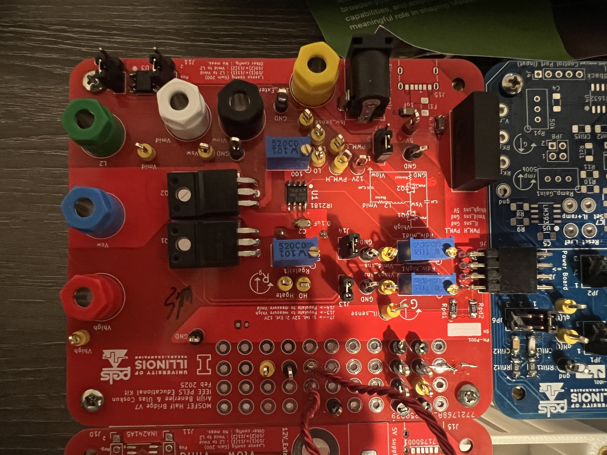
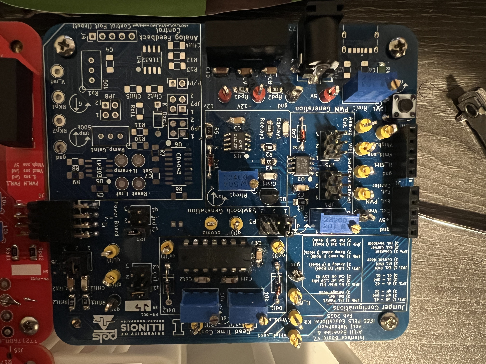
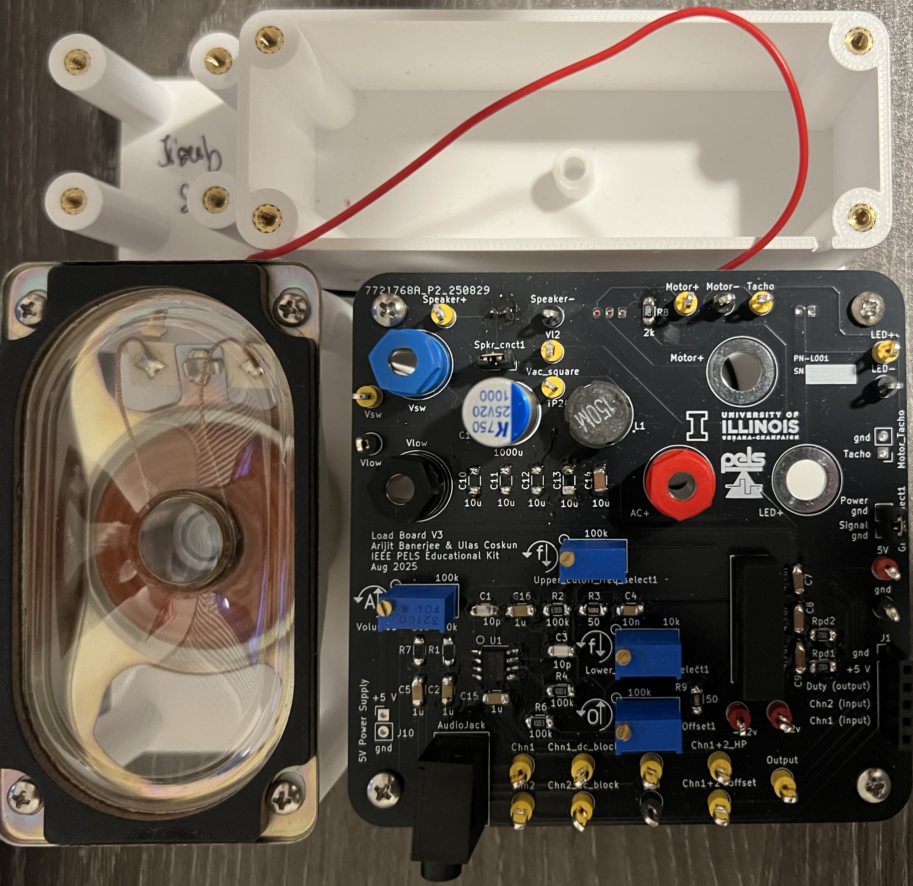
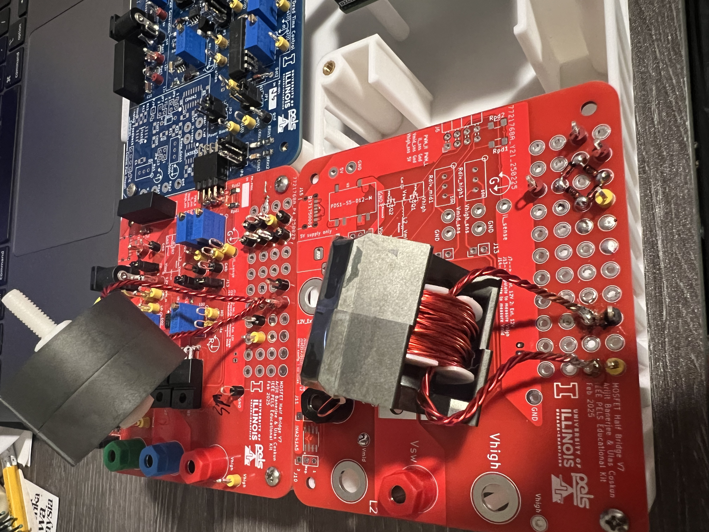
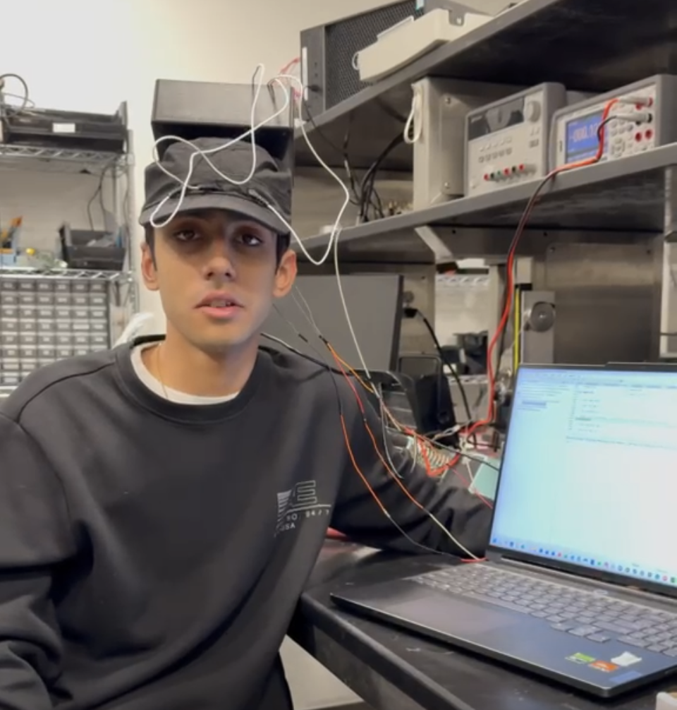
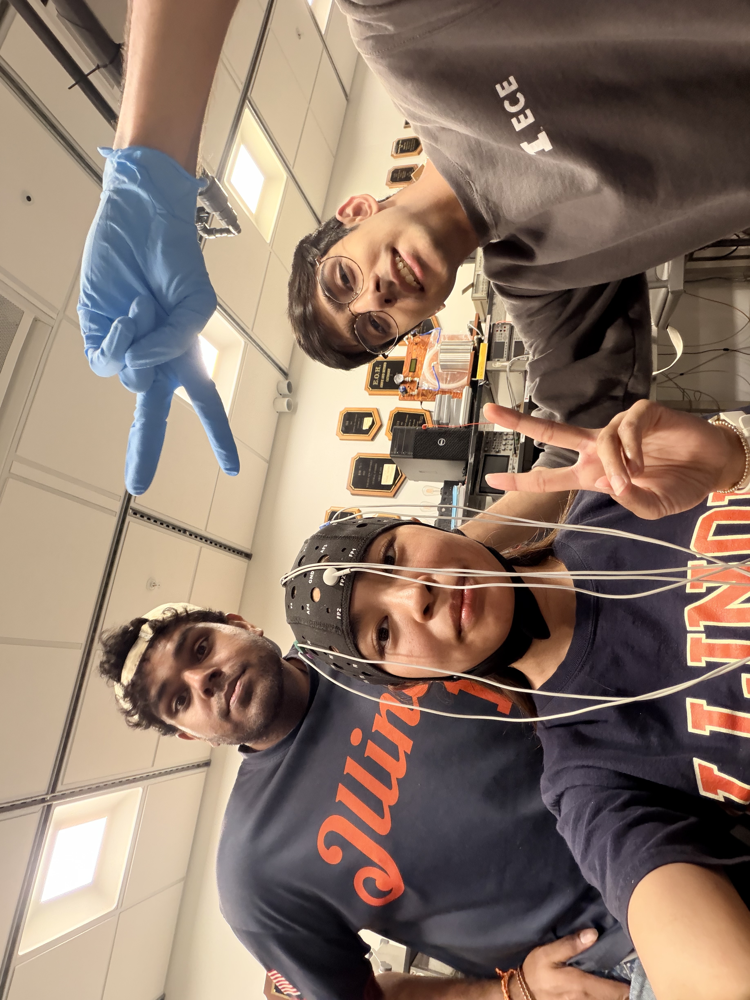

Projects
-

Pong
2022
This Python script utilizes the turtle module to recreate the excitement of a Ping Pong game. Players control paddles using keyboard inputs ('q', 'a' for player A and 'p', 'l' for player B) to hit a ball back and forth across the screen. Each time the ball passes the left or right boundary, the corresponding player scores a point. The game features simple graphics with paddles and a ball on a black background, while a scoreboard at the top displays the current score. The game ends when one player reaches a predetermined score limit.
-

Autonomous Obstacle-Avoiding Toy Car
2022
I designed and built a customizable toy car using 3D printed components, motors, and a simple circuit powered by a battery. Initially, the car featured adjustable speeds controlled by potentiometers, enabling directional changes through differential wheel speeds. Later, I enhanced the design by integrating ultrasound sensors that autonomously steer the car away from obstacles detected on either side.
-

Buck / Boost Converter Platform
2025
Assembled and tested buck and boost converter circuits based on provided designs, analyzing switching behavior, output ripple, and efficiency. Validated performance through LTspice simulation and oscilloscope measurements, gaining hands-on experience with power conversion and non-ideal effects.
-

PWM Generation & Dead-Time Control Board
2025
Implemented a PWM generation system using both Arduino-based control and analog circuitry, including sawtooth waveform generation via an integrator and comparator-based modulation. Tuned and analyzed adjustable dead-time to study switching transitions and prevent shoot-through in power stages.
-

Audio PWM Amplifier Board
2025
Built a PWM-based audio system using an analog comparator, where an audio signal served as a reference to generate a modulated PWM output capable of driving a speaker. Evaluated signal fidelity, switching behavior, and filtering considerations, including the effects of electrical filtering and mechanical resonance in the speaker during hardware testing.
-

Isolated Series Resonant Converter (SRC)
2025
Designed and built an isolated series resonant converter with a custom transformer and resonant tank to achieve soft-switching operation. Modeled system behavior in LTspice, accounting for parasitics and resonant characteristics, and validated performance through hardware testing. Explored trade-offs between switching frequency, efficiency, and load conditions, gaining insight into real-world non-idealities and converter behavior.
-

Single Channel EEG Sleep Detection System
2025
Built a single-channel EEG acquisition system using flat-snap electrodes and an analog front-end for neural signal monitoring. Integrated LiPo battery management for portable operation and implemented a buzzer-based alert triggered by detected drowsiness. Tested the system on more than 10 volunteers, tuning detection thresholds to improve reliability while accounting for variations in signal quality due to factors such as sleep patterns, caffeine intake, and skin-electrode characteristics.
-

3-Channel EEG SSVEP Control System
2026
Developed a 3-channel EEG acquisition system for SSVEP-based control using an STM32 microcontroller, integrating analog front-end design, LiPo battery management, and Bluetooth communication for real-time data transmission. Processed multi-channel neural signals to detect frequency-based responses and applied them to control a simple lane-shifting game, demonstrating real-time user input via EEG. Testing on multiple volunteers was conducted to tune detection parameters and improve decision-making reliability.